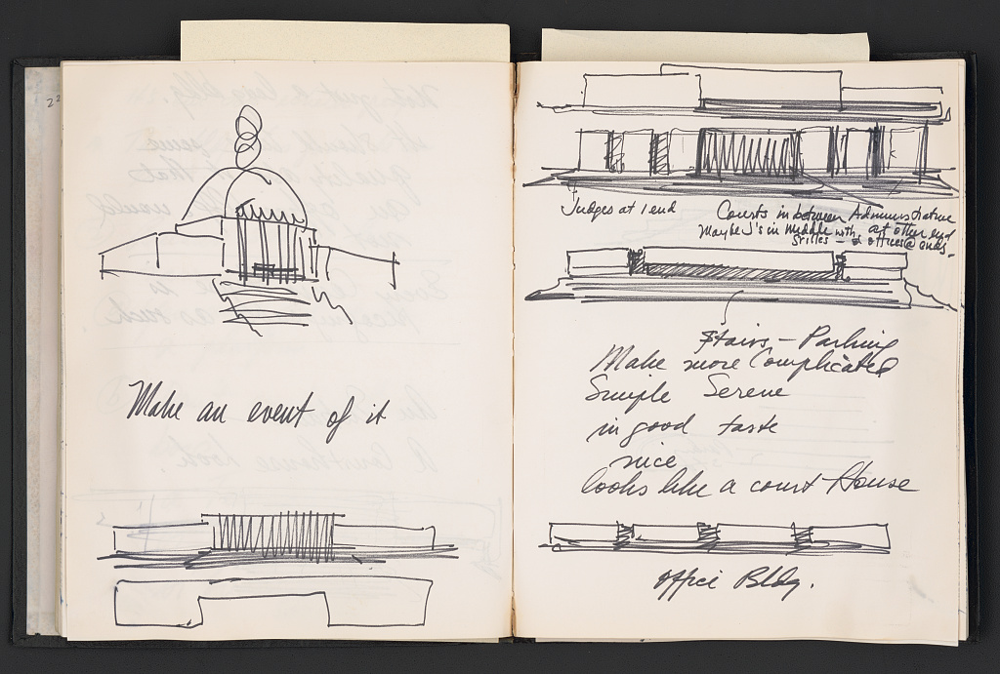

writing
As a scientist, one thing I'm hyper-aware of is how I can use my experience to help people learn more about science. As a graduate student I write for the website astrobites, and have been getting more involved in writing about science policy. Here are some of my favorite pieces I've written for astrobites:
|
 |
In my free time, I love to read! Some of my favorite poets are Richard Siken, Arthur Rimbaud, and Charles Baudelaire. Some of my favorite authors are Toni Morrison, Clarice Lispector, Susan Sontag, James Baldwin, R.F. Kuang, and Maggie Stiefvater.